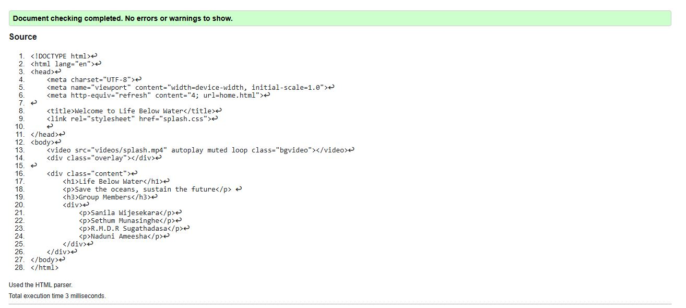
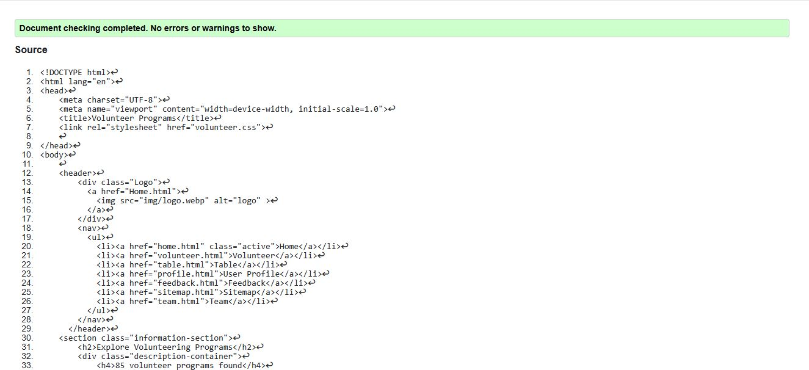
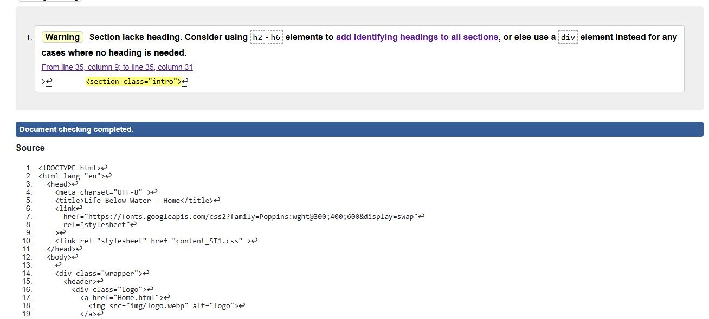

Splash Page validation report
Implemented using HTML for structure and CSS for styling. A hero section with a background image was used to create an engaging first impression. The Splash Page serves as an engaging introduction, dynamically redirecting users to the Home Page after a brief 4-second delay, ensuring a seamless transition into the website's main content.
Back to Page Editor page
Volunteer Page validation report
The Volunteer Page is designed to provide an interactive experience, allowing users to explore marine conservation volunteering opportunities. It features a scrollable information section, user ratings and reviews and a feedback form. The layout is structured using flexbox and grid, ensuring proper alignment of text, images, and buttons. Volunteering programs are displayed in cards, styled with CSS hover effects and box shadows. The page includes a dropdown menu for sorting, interactive buttons and a text area for user feedback, with a simple emoji-based rating system. Styling follows the Global CSS theme, maintaining consistency with the website design.
Back to Page Editor page
Content Page validation report
Implemented a dark-themed layout with white text for readability. The page uses CSS Flexbox to align text on the left and images on the right, creating a clean and structured presentation.
